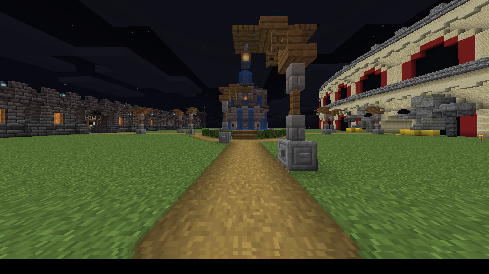
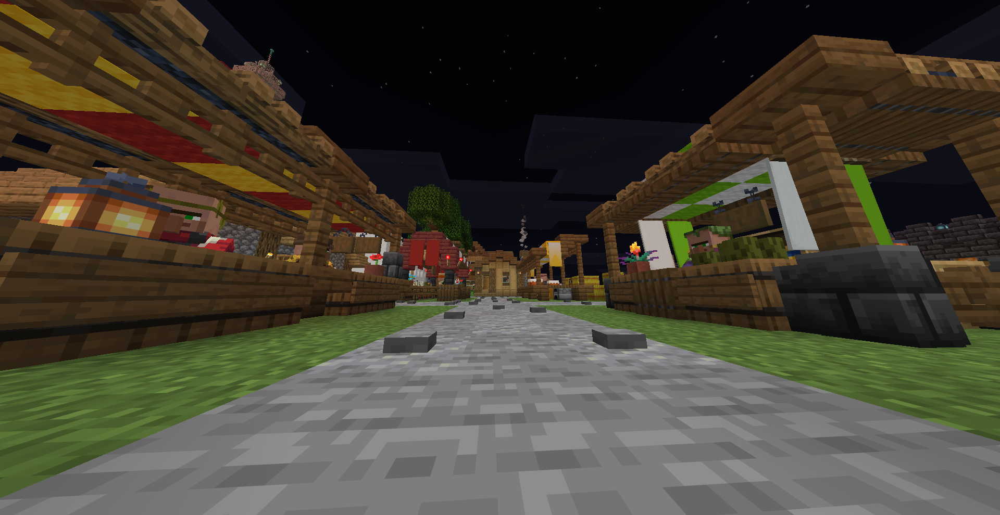

Esta es una pagina informativa sobre el server de poderes,
el cual es un servidor de minecraft que estoy organizando
y preparando en el que se va a jugar entre los jugadores invitados
a un mundo supervivencia de minecraft pero con la introduccion de habilidades que se pueden desbloquear

-poderes (activables y efectos pasivos): van a ser habilidades que van a dar ventaja a cada jugador mientras las vaya cosiguiendo y utilizando
-jefes: seran enemigos fuertes luchables que al derrotar daran recompensas necesarias para comprar equipaje mejorado o demas
-lugar de aparicion con multiples estructuras funcionales como tiendas, coliseo y tablon de misiones que recibira a los jugadores al entrar al mundo

1- allay mascota
2- rojo
3- 10 sombras
4- aquaman
5- abejas asesinas
6- auto explosion
7- hombre lobo
8- espectro
9- vuelo
10- fuga
11- reencarnacion
12- copion
13- berserker
14- plataforma instantanea
15- gigantismo
16- robo de vida
17- jugo naranja sospechoso
18- Enrededaderas
19- hiper galletas
20- excavadora
21- armadura de absorcion
22- arena de batalla
23- golpe divergente
24- saqueo
25- biblioteca secreta
26- helios
27- hermes
28- prometeo
29- icaro